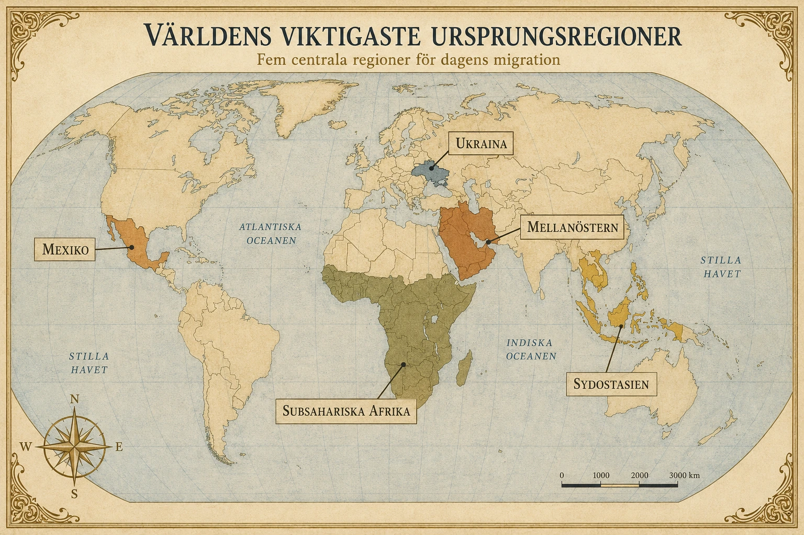
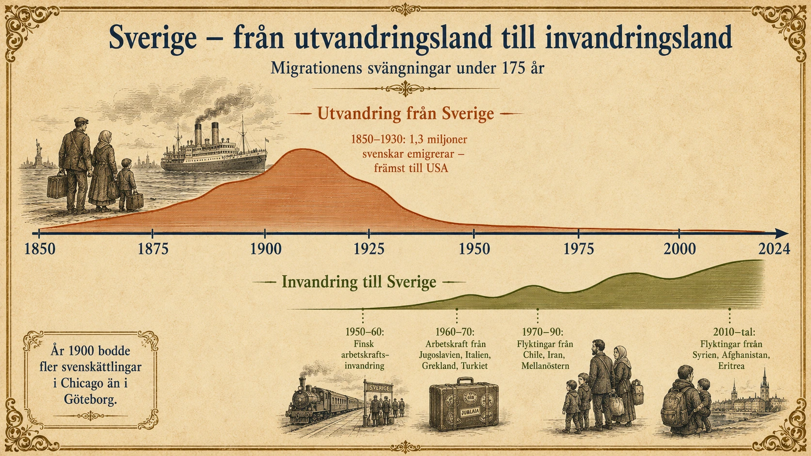
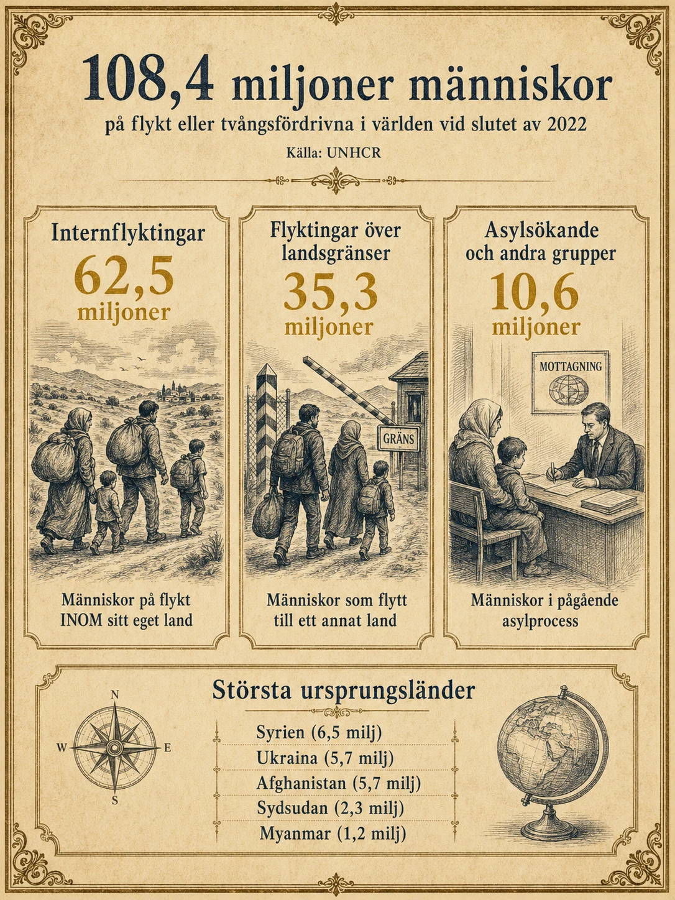
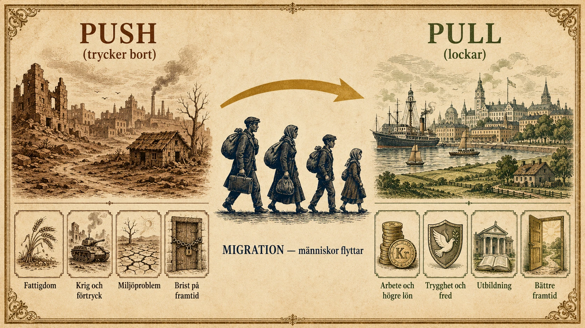

Migration
— Människor på rörelse —
Migration – när människor flyttar
I de tre första avsnitten har vi sett att människor är ojämnt fördelade på jorden, och hur en befolknings storlek förändras genom födelse- och dödstal. Men det finns en tredje stor demografisk kraft som vi ännu inte talat om: människor flyttar. Varje år lämnar miljontals människor sina hem för att börja om på en annan plats. Det kallas migration.
Migration kan vara stor eller liten. En person som flyttar från landsbygden i Skåne till Malmö migrerar — även om resan bara är några mil. En person som flyttar från Syrien till Sverige migrerar också, även om resan är några tusen kilometer. Vad de delar är att de flyttar sin bosättning från en plats till en annan.
Vi använder två viktiga begrepp för att beskriva flytten över landsgränser. När en människa flyttar ut från ett land kallas hen emigrant. När samma människa flyttar in i ett nytt land kallas hen immigrant. Samma person är alltså båda samtidigt: en person som flyttar från Syrien till Sverige är emigrant från Syrien och immigrant i Sverige.
Migration kan också vara frivillig — när någon själv väljer att flytta för att få ett bättre liv. Eller påtvingad — när någon tvingas lämna sitt hem på grund av krig, förföljelse, naturkatastrof eller svält. I praktiken är gränsen ofta otydlig. En människa som lämnar ett fattigt land kanske "väljer" det, men valet kan se annorlunda ut när hemmet inte erbjuder någon framtid.
Olika typer av migration
Migration kan se ut på olika sätt beroende på avstånd, anledning och hur länge flytten varar.
Intern migration
Intern migration betyder att människor flyttar inom samma land. Det är faktiskt den vanligaste formen av migration i världen — många fler människor flyttar inom sitt land än mellan länder.
Den vanligaste typen av intern migration är urbanisering: när människor flyttar från landsbygden till städer. Detta har skett i nästan alla länder när samhället förändras från ett jordbrukssamhälle till ett industri- eller tjänstesamhälle.
Mekanismen är enkel. I ett jordbrukssamhälle bor de flesta människor på landet, eftersom det är där arbetet finns. När industrin växer fram behövs arbetare i fabriker, hamnar, gruvor, byggprojekt och serviceyrken — och dessa finns främst i städer. Då flyttar människor dit jobben finns. Sverige genomgick denna förändring under sent 1800-tal och tidigt 1900-tal. Idag pågår samma process i Kina, Indien, Bangladesh och stora delar av Afrika.
Urbanisering skapar möjligheter: bättre arbete, utbildning, sjukvård och kommunikationer. Men om städer växer för snabbt kan det också skapa problem — bostadsbrist, trångboddhet, dålig tillgång till rent vatten och avlopp, och framväxt av slum, alltså stadsområden där människor bor enkelt och där samhällets service inte räcker till. Vi går djupare in på urbanisering i nästa avsnitt.
Migration mellan länder
Migration mellan länder har ökat över tid. Det beror på flera saker som verkar tillsammans:
- Bättre transporter — det är idag relativt billigt och snabbt att resa över hela världen.
- Globalisering — företag arbetar internationellt och kompetent personal rör sig dit den behövs.
- Internet och sociala medier — människor kan hålla kontakt med sitt hemland och få information om möjligheter på andra håll.
- Ekonomiska skillnader — människor från fattigare länder söker sig till länder med högre löner.
- Konflikter och kriser — krig och förföljelse tvingar människor att fly.
Idag bor omkring 281 miljoner människor utanför sitt födelseland — ungefär 3,6 procent av världens befolkning. Vid slutet av 2022 var dessutom 108,4 miljoner människor på flykt eller tvångsfördrivna i världen.
Den största delen av migrationen mellan länder sker längs ett antal stora migrationskorridorer — etablerade rörelser mellan vissa regioner som upprepats år efter år. Här är de fem viktigaste under 2020-talet:
| Migrationskorridor | Riktning | Antal (ungefär) |
|---|---|---|
| Mexiko/Centralamerika → USA | Norrut | ~11 milj |
| Mellanöstern → Europa | Nordvästerut | ~8 milj |
| Sydostasien → Gulfstaterna | Västerut | ~12 milj |
| Subsahariska Afrika → Europa | Norrut | ~5 milj |
| Ukraina → Västeuropa | Västerut | ~6 milj |
I kartan nedan är de fem ursprungsregionerna markerade i färg. Du kan följa varje korridor från sin färgmarkerade region mot sitt destinationsområde.

En särskilt viktig form av migration mellan länder är arbetskraftsinvandring — när människor flyttar för att arbeta. Det kan vara välutbildade specialister som flyttar till Silicon Valley, eller byggnadsarbetare som söker sig från Östeuropa till Skandinavien för säsongsarbete. Sverige har sedan andra världskriget tagit emot stora mängder arbetskraftsinvandrare — först från Finland, sedan från Jugoslavien, Italien, Grekland och Turkiet.

Cirkulär migration
Inte all migration är permanent. Cirkulär migration är när människor flyttar fram och tillbaka mellan länder — ofta för säsongsarbete eller temporära jobbkontrakt. Polska byggarbetare som arbetar i Sverige men reser hem flera gånger per år är ett exempel. Filippinska sjuksköterskor som arbetar i Saudiarabien några år innan de återvänder hem är ett annat. För den enskilda människan är cirkulär migration ofta en strategi att försörja familjen utan att lämna hemlandet för gott.
Flyktingar och påtvingad migration
En särskilt utsatt grupp är flyktingar. En flykting är en människa som lämnat sitt land därför att hen riskerar förföljelse. Definitionen kommer från Genèvekonventionen från 1951, ett internationellt avtal som de flesta länder i världen har skrivit under.
Förföljelse kan bero på flera saker:
- Etnisk grupp eller nationalitet — till exempel rohingyer i Burma, kurder i flera mellanösternländer.
- Religion — till exempel kristna i vissa muslimska länder, muslimer i Indien, jezidier i Irak.
- Politisk uppfattning — människor som motsätter sig diktatoriska regimer.
- Kön — kvinnor som flyr från länder med extremt förtryck av kvinnor.
- Sexuell läggning — HBTQ-personer i länder där detta är förbjudet.
En särskild kategori som vuxit fram under 2000-talet är klimatflyktingar — människor som tvingas lämna sina hem på grund av miljöförändringar och naturkatastrofer. Det kan handla om människor från lågländer som översvämmats av stigande havsnivåer, eller bönder från områden där torka och ökenspridning gjort jordbruket omöjligt. Klimatflyktingar är ännu inte erkända som en formell kategori i Genèvekonventionen, men antalet människor som flyr av klimatskäl ökar snabbt och beräknas bli en av 2000-talets största migrationsfrågor.

Push- och pullfaktorer
När forskare och journalister förklarar migration använder de ofta två begrepp: push-faktorer och pull-faktorer.
Push-faktorer är sådant som trycker bort människor från en plats. Pull-faktorer är sådant som lockar människor till en annan plats. Migration sker nästan alltid när dessa två krafter samverkar — något får en person att vilja lämna, samtidigt som något annat lockar någon annanstans.

Push- och pullfaktorer kan delas in i fyra kategorier som ofta verkar tillsammans.
Demografiska och sociala faktorer
Push: Snabb befolkningstillväxt med ung åldersstruktur skapar tryck — när det föds många barn men det inte finns tillräckligt med arbete eller jord, måste vissa söka sig någon annanstans. Också brist på utbildningsmöjligheter, dålig sjukvård och svaga sociala trygghetssystem kan göra människor benägna att flytta.
Pull: En stabil befolkning, ofta en åldrande sådan, skapar efterfrågan på arbetskraft. Välutvecklade välfärdssystem erbjuder utbildning, sjukvård och social trygghet. Många dras också till länder där släktingar redan bor — när någon i familjen flyttat och etablerat sig blir det lättare för fler att följa efter. Sociala medier förstärker detta genom att sprida bilder av livet i mottagarländerna.
Ekonomiska faktorer
Push: Arbetslöshet, låga löner, fattigdom och låg levnadsstandard tvingar människor att söka försörjning någon annanstans.
Pull: Hög efterfrågan på arbetskraft, höga löner och hög levnadsstandard lockar. Skillnaden i lön mellan ett rikt och ett fattigt land kan vara enorm — en sjuksköterska i Filippinerna kan tjäna fem gånger så mycket i USA eller Storbritannien. För många människor är ekonomiska faktorer den starkaste drivkraften.
Politiska faktorer
Push: Diktatur, bristande demokrati, korruption, krig, terror, brott mot mänskliga rättigheter och förtryck av minoriteter — allt detta driver människor på flykt. Politisk migration är ofta påtvingad snarare än frivillig.
Pull: Demokrati, rättssäkerhet, politisk stabilitet, fred och trygghet drar människor till. Skydd för mänskliga och medborgerliga rättigheter, samt ett fungerande rättssystem, är centrala för många flyktingar och migranter.
Ekologiska faktorer
Push: Miljökatastrofer, torka, ökenspridning, översvämningar, jordskred, brist på naturresurser och rent vatten. Också dålig miljöpolitik och markförstöring kan göra ett område obeboeligt på lång sikt.
Pull: Bättre miljö och klimat, ren luft, tillgång till naturresurser och en aktiv miljöpolitik som skyddar resurser för framtiden.
I praktiken samverkar dessa fyra grupper. En person som lämnar Syrien gör det kanske främst av politiska skäl (kriget) — men också av ekonomiska (jobben försvann), demografiska (sjukvården kollapsade) och ekologiska (torkan i Syrien före kriget var den värsta på 900 år). Migration är sällan en enskild orsak. Det är ett mönster av flera krafter som verkar tillsammans.
Migrationens konsekvenser
Migration förändrar både den plats människor lämnar och den plats de flyttar till.
För utflyttningslandet kan migration vara både en lättnad och en förlust. När unga människor lämnar minskar trycket på begränsade resurser, men landet förlorar samtidigt arbetskraft, kunskap och ofta de som tagit initiativ att resa. Detta fenomen kallas brain drain — kompetensflykt — och drabbar särskilt fattigare länder som utbildar läkare, ingenjörer och forskare som sedan flyttar till rikare länder med bättre löner. Filippinerna utbildar varje år tusentals sjuksköterskor som arbetar i USA, Storbritannien och Saudiarabien. Indien utbildar mjukvaruingenjörer som arbetar i Silicon Valley. Det är en utmaning för fattigare länder att kunna behålla sin utbildade befolkning.
För inflyttningslandet uppstår frågor om hur de nya invånarna ska bli en del av samhället. Två centrala begrepp är integration och segregation.
Integration är när nya invånare gradvis blir en del av det nya samhället — lär sig språket, hittar arbete, deltar i utbildning och samhällsliv. Integration är inte att man tappar sin tidigare identitet utan att man får möjlighet att vara fullvärdig medborgare i det nya landet.
Segregation är motsatsen — när nya invånare hamnar i isolerade områden, ofta tillsammans med andra med samma bakgrund, utan tillräcklig kontakt med övriga samhället. Detta kan leda till arbetslöshet, sämre skolresultat, social oro och utanförskap. Många länder, inklusive Sverige, brottas med segregation i storstädernas förorter.
Att bygga ett samhälle där integration fungerar är en av de största utmaningarna för länder som tar emot stor migration.
Över- och underbefolkning
Inom migrationsforskningen används också två begrepp som beskriver problem i en befolkning — problem som migration ofta är en respons på.
Överbefolkning uppstår när befolkningen är större än vad områdets resurser klarar av att försörja. Men begreppet är mer komplicerat än det låter. Det handlar inte bara om antalet människor — det handlar också om hur resurserna används och fördelas.
Ett land kan ha många invånare men ändå fungera bra om det har god teknik, bra utbildning, fungerande samhällssystem och resurser som används effektivt. Tyskland har 84 miljoner invånare på en yta mindre än Sveriges, men är ett av världens rikaste länder. Samtidigt kan ett land med färre invånare ändå få problem om resurserna är ojämnt fördelade, eller om landet saknar kapital, teknik och utbildning.
Här spelar världsekonomin en stor roll. Rika länder har ofta större makt över produktion, handel och priser. Fattigare länder kan producera råvaror som kaffe, te, tobak eller mineraler, men ändå få en liten del av vinsten. Det gör att fattiga länder ibland har svårt att utveckla sin ekonomi trots att de har naturresurser — och det är ett av de viktigaste skälen till migration: att människor söker sig till länder där den ekonomiska vinsten också stannar.
Miljöproblem kan också bidra till överbefolkning. Ökenspridning, översvämningar, havsnivåhöjning och försaltning av jordbruksmark gör det svårare att odla mat och försörja en växande befolkning.
Underbefolkning är motsatsen — det finns för få människor för att använda de resurser och möjligheter som finns. Norra Sverige är ett exempel: där finns enorma naturresurser i form av skog, malm, vattenkraft och rymlig yta, men många orter har svårt att hitta tillräcklig arbetskraft. När befolkningen är för liten i ett område kan företag inte växa, skolor stängas, butiker tvingas slå igen — en negativ spiral kan börja.
Många rika länder har idag åldrande befolkningar — vi gick igenom det i stadium 5 av den demografiska transitionen. När många människor blir gamla och färre arbetar kan samhället få brist på arbetskraft inom vård, industri, transport och skola. Därför försöker flera av dessa länder locka till sig arbetskraftsinvandrare.
Ett viktigt begrepp i sammanhanget är reproduktionstal: hur många barn varje kvinna i genomsnitt behöver föda för att befolkningen ska hålla sig stabil. Detta tal ligger runt 2,1 barn per kvinna. Det är inte exakt två, eftersom vissa barn dör innan de når vuxen ålder, även i välutvecklade länder. När fertiliteten ligger under 2,1 krymper befolkningen — om inte migration kompenserar. Sverige ligger idag runt 1,5 barn per kvinna. Det är en av anledningarna till att Sverige är beroende av invandring för att behålla sin befolkningsstorlek.
Sammanfattning – migrationens orsaker och verkningar
Vi kan sammanfatta migration som en kedja av orsaker och verkningar:
- Människor bor ojämnt på jorden — vissa platser har bättre möjligheter än andra.
- Push-faktorer trycker bort människor från områden där det är svårt att leva — krig, fattigdom, miljöproblem, brist på framtid.
- Pull-faktorer lockar människor till andra områden — arbete, säkerhet, utbildning, sjukvård.
- Migration kan vara frivillig (för bättre möjligheter) eller påtvingad (för att undkomma fara).
- Den största delen av migration sker inom länder — främst som urbanisering från landsbygd till städer.
- Migration mellan länder ökar, drivet av globalisering, transporter och ekonomiska skillnader.
- Migration förändrar både utflyttningslandet (genom brain drain) och inflyttningslandet (genom utmaningar med integration och segregation).
- Begreppen överbefolkning och underbefolkning beskriver problem som migration ofta är en respons på.
Det är värt att avsluta med en viktig observation: de flesta människor som migrerar flyttar faktiskt ganska korta avstånd. Den dominerande bilden i media är ofta migration från fattiga länder till rika länder, men i verkligheten flyttar de flesta människor inom sitt eget land eller till ett grannland. Migration är inte bara en fråga om Syrien till Sverige eller Mexiko till USA. Det är också en fråga om Norrbotten till Stockholm, eller om Bangladesh till Indien.
I nästa avsnitt går vi vidare till den största formen av migration i modern tid — urbaniseringen — och hur den formar världens städer.
Migration – när människor flyttar
I de tre första avsnitten har vi sett att människor är ojämnt fördelade på jorden, och hur en befolknings storlek ändras genom födsel- och dödstal. Nu kommer vi till den tredje stora kraften: människor flyttar.
När människor flyttar sin bosättning från en plats till en annan kallas det migration. Det kan vara en kort flytt — som från en by i Skåne till Malmö. Eller en lång flytt — som från Syrien till Sverige.
Två viktiga ord:
- En emigrant är en människa som flyttar ut från ett land.
- En immigrant är en människa som flyttar in i ett nytt land.
Samma person är båda samtidigt. En person som flyttar från Syrien till Sverige är emigrant från Syrien och immigrant i Sverige.
Migration kan också vara:
- Frivillig — när någon själv väljer att flytta för ett bättre liv.
- Påtvingad — när någon tvingas lämna sitt hem på grund av krig, förföljelse, naturkatastrof eller svält.
I praktiken är gränsen ofta otydlig. Att "välja" att lämna ett land kan se annorlunda ut när hemmet inte erbjuder någon framtid.
Olika typer av migration
- Intern migration = inom samma land (vanligast i världen)
- Migration mellan länder = från ett land till ett annat
- Cirkulär migration = fram och tillbaka, ofta säsongsarbete
- Urbanisering = från landsbygd till stad (vanligaste typen av intern migration)
Intern migration
Intern migration är när människor flyttar inom samma land. Detta är faktiskt den vanligaste formen av migration i världen — många fler människor flyttar inom sitt land än mellan länder.
Den vanligaste typen av intern migration är urbanisering — när människor flyttar från landsbygden till städer.
Tänk så här: i ett jordbrukssamhälle bor de flesta på landet eftersom det är där arbetet finns. När industrin växer fram behövs arbetare i fabriker, hamnar, gruvor och städer. Då flyttar människor dit jobben finns.
- Sverige genomgick denna förändring under sent 1800-tal och tidigt 1900-tal.
- Idag pågår samma process i Kina, Indien, Bangladesh och stora delar av Afrika.
Urbanisering skapar möjligheter — bättre arbete, utbildning, sjukvård. Men om städer växer för snabbt kan det skapa problem:
- bostadsbrist
- trångboddhet
- dålig tillgång till rent vatten och avlopp
- framväxt av slum (stadsområden där människor bor mycket enkelt)
Vi går djupare in på urbanisering i nästa avsnitt.
Migration mellan länder
Migration mellan länder har ökat över tid. Det beror på flera saker:
- Bättre transporter — det är billigt och snabbt att resa idag.
- Globalisering — företag arbetar internationellt.
- Internet och sociala medier — människor får information om möjligheter i andra länder.
- Ekonomiska skillnader — människor söker sig till länder med högre löner.
- Konflikter och kriser — krig och förföljelse tvingar människor att fly.
Idag bor omkring 281 miljoner människor utanför sitt födelseland — ungefär 3,6 procent av världens befolkning.
Den största delen av migrationen mellan länder sker längs vissa stora vägar — så kallade migrationskorridorer. De fem viktigaste idag:
| Varifrån → vart? | Storlek |
|---|---|
| Mexiko → USA | ~11 milj |
| Mellanöstern → Europa | ~8 milj |
| Sydostasien → Gulfstaterna | ~12 milj |
| Subsahariska Afrika → Europa | ~5 milj |
| Ukraina → Västeuropa | ~6 milj |
Kartan visar de fem viktigaste regionerna där människor flyttar ifrån idag. Varje region har sin egen färg.
- Mexiko (orange) — människor flyttar norrut till USA
- Mellanöstern (röd) — människor flyttar till Europa
- Ukraina (blå) — människor flyttar till resten av Europa
- Subsahariska Afrika (grön) — människor flyttar till Europa
- Sydostasien (gul) — människor flyttar till Gulfstaterna
Fundera: Vad gör att just dessa fem regioner är ursprung för så mycket migration?
En särskilt viktig form är arbetskraftsinvandring — när människor flyttar för att arbeta. Sverige har sedan andra världskriget tagit emot stora mängder arbetskraftsinvandrare, först från Finland, sedan från Jugoslavien, Italien, Grekland och Turkiet.
Tidslinjen visar 175 år av svensk migration.
- Den orangea kurvan ovanför axeln visar utvandring — 1,3 miljoner svenskar lämnade landet mellan 1850 och 1930.
- Den gröna kurvan under axeln visar invandring — som växer från 1950-talet.
- Lägg märke till de fyra vågorna av invandring: finsk arbetskraft, arbetskraft från södra Europa, flyktingar från 1970-talet, och nya flyktingar på 2010-talet.
- Citatet i hörnet: "År 1900 bodde fler svenskättlingar i Chicago än i Göteborg" — en stark påminnelse om hur stor utvandringen var.
Fundera: Varför ändrades Sverige från utvandringsland till invandringsland?
Cirkulär migration
Inte all migration är permanent. Cirkulär migration är när människor flyttar fram och tillbaka — ofta för säsongsarbete.
Exempel:
- Polska byggarbetare som arbetar i Sverige men reser hem flera gånger per år.
- Filippinska sjuksköterskor som arbetar i Saudiarabien några år innan de återvänder hem.
För den enskilda människan är cirkulär migration ofta ett sätt att försörja familjen utan att lämna hemlandet för gott.
Flyktingar och påtvingad migration
- En flykting riskerar förföljelse i sitt hemland
- Definitionen kommer från Genèvekonventionen 1951
- Klimatflyktingar är en ny kategori som ökar snabbt
- Vid slutet av 2022 var 108,4 miljoner människor på flykt globalt
En särskilt utsatt grupp är flyktingar. En flykting är en människa som lämnat sitt land för att hen riskerar förföljelse. Definitionen kommer från Genèvekonventionen från 1951, ett internationellt avtal som de flesta länder skrivit under.
Förföljelse kan bero på:
- Etnisk grupp eller nationalitet (t.ex. rohingyer i Burma)
- Religion (t.ex. jezidier i Irak)
- Politisk uppfattning (t.ex. demokrater i diktaturer)
- Kön (t.ex. kvinnor i länder med extremt förtryck)
- Sexuell läggning (t.ex. HBTQ-personer i länder där detta är förbjudet)
En ny kategori som vuxit fram under 2000-talet är klimatflyktingar — människor som tvingas lämna sina hem på grund av miljöförändringar och naturkatastrofer:
- Översvämmade lågländer
- Bönder från områden med svår torka eller ökenspridning
Klimatflyktingar är ännu inte erkända som en formell kategori, men antalet ökar snabbt och beräknas bli en av 2000-talets största migrationsfrågor.
Bilden visar hur de 108,4 miljoner människorna på flykt fördelas.
- 62,5 miljoner är internflyktingar — människor på flykt INOM sitt eget land.
- 35,3 miljoner är flyktingar över landsgränser — som flytt till ett annat land.
- 10,6 miljoner är asylsökande — människor i pågående asylprocess.
- Längst ner ser du de största ursprungsländerna: Syrien, Ukraina, Afghanistan, Sydsudan och Myanmar.
Fundera: De flesta som är på flykt har INTE lämnat sitt eget land. Vad säger det om hur vi pratar om flyktingar i media?
Push- och pullfaktorer
- Push-faktorer = sådant som trycker bort människor från en plats
- Pull-faktorer = sådant som lockar människor till en plats
- Migration sker när de samverkar — något trycker bort, något lockar
- Faktorerna delas i fyra grupper: demografiska, ekonomiska, politiska, ekologiska
För att förklara migration använder vi två begrepp: push-faktorer och pull-faktorer.
- Push-faktorer trycker bort människor från en plats.
- Pull-faktorer lockar människor till en annan plats.
Migration sker nästan alltid när dessa två krafter samverkar — något får en person att vilja lämna, samtidigt som något annat lockar någon annanstans.
Bilden visar hur migration fungerar.
- Vänster sida visar push-faktorer — vad som trycker bort människor. En förstörd stad, en stridsvagn, en torr åker, en låst dörr. Allt detta är skäl att lämna.
- Höger sida visar pull-faktorer — vad som lockar människor. Mynt (arbete och lön), en sköld (trygghet), en bok (utbildning), en öppen dörr (framtid).
- I mitten vandrar en familj från push-sidan till pull-sidan.
Fundera: Vilken push-faktor tror du är starkast just nu i världen?
Faktorerna kan delas in i fyra kategorier:
Demografiska och sociala faktorer
Push (bort): snabb befolkningstillväxt, brist på utbildning, dålig sjukvård.
Pull (lockar): stabil befolkning som behöver arbetskraft, välfärdssystem, släktingar som redan bor där.
Ekonomiska faktorer
Push: arbetslöshet, låga löner, fattigdom.
Pull: efterfrågan på arbetskraft, höga löner, hög levnadsstandard.
Tänk så här: en sjuksköterska i Filippinerna kan tjäna fem gånger så mycket i USA eller Storbritannien. För många är ekonomiska faktorer den starkaste drivkraften.
Politiska faktorer
Push: diktatur, krig, terror, brott mot mänskliga rättigheter, förtryck av minoriteter.
Pull: demokrati, rättssäkerhet, fred och trygghet, fungerande rättssystem.
Ekologiska faktorer
Push: miljökatastrofer, torka, ökenspridning, översvämningar, brist på rent vatten.
Pull: bra miljö och klimat, ren luft, en aktiv miljöpolitik.
Tänk så här: dessa fyra grupper samverkar i praktiken. En person som lämnar Syrien gör det främst av politiska skäl (kriget) — men också av ekonomiska (jobben försvann), demografiska (sjukvården kollapsade) och ekologiska (en torka). Migration är sällan en enskild orsak. Det är ett mönster av flera krafter.
Migrationens konsekvenser
- Brain drain = när ett land förlorar sina utbildade människor
- Integration = när invandrare blir en del av samhället
- Segregation = när invandrare hamnar i isolerade områden
Migration förändrar både den plats människor lämnar och den plats de flyttar till.
För utflyttningslandet
När unga människor lämnar minskar trycket på resurser. Men landet förlorar samtidigt arbetskraft och kunskap.
Brain drain (kompetensflykt) drabbar särskilt fattigare länder. De utbildar läkare, ingenjörer och forskare som sedan flyttar till rikare länder.
- Filippinerna utbildar tusentals sjuksköterskor som arbetar i USA, Storbritannien och Saudiarabien.
- Indien utbildar mjukvaruingenjörer som arbetar i Silicon Valley.
Det är en utmaning för fattigare länder att behålla sin utbildade befolkning.
För inflyttningslandet
För inflyttningslandet är frågan: hur ska de nya invånarna bli en del av samhället? Två viktiga begrepp:
Integration = när nya invånare gradvis blir en del av det nya samhället. De lär sig språket, hittar arbete, deltar i utbildning och samhällsliv. Integration är inte att tappa sin tidigare identitet — det är att få vara fullvärdig medborgare i det nya landet.
Segregation = motsatsen. Nya invånare hamnar i isolerade områden, ofta tillsammans med andra med samma bakgrund, utan tillräcklig kontakt med övriga samhället. Det kan leda till arbetslöshet, sämre skolresultat och utanförskap.
Många länder, inklusive Sverige, brottas med segregation i storstädernas förorter. Att bygga ett samhälle där integration fungerar är en av de största utmaningarna för länder som tar emot stor migration.
Över- och underbefolkning
- Överbefolkning = för många människor för områdets resurser
- Underbefolkning = för få människor för områdets möjligheter
- Reproduktionstal = 2,1 barn per kvinna behövs för stabil befolkning
- Sverige ligger på 1,5 — vi är beroende av invandring
Överbefolkning uppstår när befolkningen är större än vad områdets resurser klarar av att försörja. Men det handlar inte bara om antal — det handlar också om hur resurserna används och fördelas.
Tänk så här:
- Tyskland har 84 miljoner invånare på en yta mindre än Sveriges, men är ett av världens rikaste länder.
- Ett annat land med färre invånare kan ändå ha problem om resurserna är ojämnt fördelade.
Här spelar världsekonomin en stor roll. Fattigare länder kan producera kaffe, te eller mineraler, men ändå få en liten del av vinsten. Det är ett av de viktigaste skälen till migration — att människor söker sig till länder där den ekonomiska vinsten också stannar.
Miljöproblem kan också bidra till överbefolkning:
- ökenspridning
- översvämningar
- havsnivåhöjning
- försaltning av jordbruksmark
Underbefolkning är motsatsen — för få människor för att använda resurserna och möjligheterna.
Norra Sverige är ett exempel. Där finns:
- skog
- malm
- vattenkraft
- rymlig yta
Men många orter har svårt att hitta arbetskraft. När befolkningen är för liten kan företag inte växa, skolor stängas, butiker slå igen.
Många rika länder har idag åldrande befolkningar (stadium 5). När många blir gamla och färre arbetar kan samhället få brist på arbetskraft. Därför försöker flera länder locka till sig arbetskraftsinvandrare.
Ett viktigt begrepp är reproduktionstal: hur många barn varje kvinna behöver föda för att befolkningen ska hålla sig stabil. Detta tal är 2,1 barn per kvinna.
- Sverige ligger idag runt 1,5 barn per kvinna.
- Det är en av anledningarna till att Sverige är beroende av invandring för att behålla sin befolkningsstorlek.
Sammanfattning
- Människor bor ojämnt på jorden
- Push-faktorer trycker bort — krig, fattigdom, miljöproblem
- Pull-faktorer lockar — arbete, säkerhet, utbildning
- Migration kan vara frivillig eller påtvingad
- Den största delen av migration sker inom länder (urbanisering)
- Migration mellan länder ökar
- Migration förändrar både utflyttnings- och inflyttningslandet
Det är värt att avsluta med en viktig observation: de flesta människor som migrerar flyttar faktiskt ganska korta avstånd. Bilden i media är ofta migration från fattiga länder till rika länder, men i verkligheten flyttar de flesta människor inom sitt eget land eller till ett grannland.
Migration är inte bara en fråga om Syrien till Sverige eller Mexiko till USA. Det är också en fråga om Norrbotten till Stockholm, eller om Bangladesh till Indien.
I nästa avsnitt går vi vidare till den största formen av migration i modern tid — urbaniseringen — och hur den formar världens städer.
1. Push och pull i detalj — fyra grupper, många faktorer
Standardtexten gick igenom de fyra grupperna av push- och pullfaktorer översiktligt. I praktiken används en mer detaljerad analys när forskare och migrationsmyndigheter försöker förstå migrationsmönster. Här är hela bilden:
Demografiska och sociala faktorer
| Push-faktorer | Pull-faktorer |
|---|---|
| Snabb befolkningstillväxt, ung åldersstruktur | Stabil befolkning, ibland åldrande befolkning |
| Bristfällig utbildningsmöjlighet | Välfärdssystem med utbildning, sjukvård och social trygghet |
| Dålig sjukvård och social trygghet | Närvaro av släktingar i mottagarlandet |
| Positiv bild av landet via media och sociala nätverk |
Det är värt att stanna vid de två sista pull-faktorerna. Närvaro av släktingar är en av de starkaste faktorerna i modern migrationsforskning. När forskare studerar varför vissa orter blir mål för migration medan andra inte blir det, visar det sig att redan etablerade nätverk är avgörande. En invandrarfamilj från Somalia är mer benägen att bosätta sig i ett land där andra somalier redan finns, eftersom det ger tillgång till språk, gemenskap och praktisk hjälp. Detta skapar migrationskorridorer — etablerade vägar mellan vissa länder och städer som förstärks generation efter generation.
Positiv bild via media har också blivit en allt viktigare faktor. Sociala medier sprider bilder av livet i mottagarländerna, ofta starkt idealiserade. För en ung människa i ett fattigt land som ser TikTok-videor från europeiska städer kan bilden av migration som lösning förstärkas. Vissa migrationsforskare talar om att vi nu lever i en tid då även förväntningar är en migrationsdrivande kraft.
Ekonomiska faktorer
| Push-faktorer | Pull-faktorer |
|---|---|
| Arbetslöshet, låga löner | Efterfrågan på arbetskraft, höga löner |
| Fattigdom, låg levnadsstandard och låg konsumtion | Hög levnadsstandard och ekonomiskt välstånd |
De ekonomiska faktorerna är i grunden enkla — människor flyttar dit pengarna och möjligheterna finns. Men det finns en sak att tänka på. Det är inte de allra fattigaste länderna som ger upphov till mest migration. Migration kräver pengar — för resa, dokument, smugglare ibland, för att börja om på en ny plats. De fattigaste människorna i världen kan oftast inte migrera ens om de vill. De som flyttar är ofta från medelinkomstländer eller från de mer resursstarka delarna av fattiga länder.
Detta kallas av forskare för migrationspuckeln. När ett land utvecklas ekonomiskt ökar först migrationen — eftersom människor får råd att flytta. När landet sedan blir tillräckligt rikt minskar migrationen igen — för då finns möjligheter hemma. Det är en motsats till vad många tror.
Politiska faktorer
| Push-faktorer | Pull-faktorer |
|---|---|
| Diktatur, bristande demokrati, korruption | Demokrati, rättssäkerhet och politisk stabilitet |
| Krig, konflikter, terrorism | Fred och trygghet |
| Brott mot mänskliga rättigheter | Skydd för mänskliga och medborgerliga rättigheter |
| Förtryck av minoriteter | Fungerande rättssystem |
Politiska push-faktorer ger upphov till de mest dramatiska migrationsvågorna. När Syrienkriget bröt ut 2011 lämnade över 6 miljoner människor landet på några år. När Sovjetunionen kollapsade 1991 hamnade plötsligt miljontals människor i nya länder utan att flytta — gränser flyttades istället för människor. Politik kan förändra demografi snabbare än någon annan faktor.
Ekologiska faktorer
| Push-faktorer | Pull-faktorer |
|---|---|
| Miljökatastrof, torka och ökenspridning | Bättre miljö och klimat |
| Brist på naturresurser och rent vatten | Aktiv miljöpolitik och skydd av naturresurser |
| Dålig miljöpolitik och markförstöring |
De ekologiska faktorerna är historiskt de äldsta — människor har alltid lämnat områden där det blivit för svårt att leva. Men de förväntas bli en allt viktigare faktor under 2000-talet, vilket vi går djupare in på i nästa avsnitt av denna fördjupning.
2. Klimatflyktingar — 2000-talets nya migrationskraft
Klimatflyktingar är inte ett officiellt erkänt begrepp i Genèvekonventionen från 1951. Den konventionen skrevs i en värld där klimatförändringar inte var en utbredd oro, och den kräver att en person ska riskera förföljelse för att räknas som flykting. Den som flyr en torka eller en översvämmad ö faller utanför den definitionen.
Men miljödriven migration har ändå funnits i alla tider. Det som är nytt är skalan.
Långsam katastrof: havsnivåhöjningen
Många låga öar och kustområden står inför ett långsamt men nästan ofrånkomligt slut. Tuvalu i Stilla havet är ett land där den genomsnittliga höjden över havet är två meter. Vid en havsnivåhöjning på en meter kommer en stor del av öarna att vara obeboeliga. Tuvalus regering har redan börjat förhandla med Australien om hur landets befolkning ska kunna omplaceras.
Liknande situationer finns för Maldiverna, Marshallöarna och stora delar av Bangladesh. Bangladesh är särskilt oroväckande eftersom landet har 170 miljoner invånare på en yta som är extremt platt. En meter havsnivåhöjning skulle kunna fördriva 15-20 miljoner människor.
Snabb katastrof: torka och stormar
Andra klimateffekter slår snabbare. Torkan i Centralamerika under 2010-talet drev hundratusentals människor från sina hem — många av dem fortsatte sedan norrut mot USA. Det är ett exempel på hur klimatfaktorer kan utlösa migrationsvågor som sedan får andra (politiska, ekonomiska) konsekvenser.
Torkan i Syrien 2006-2011 — den värsta på 900 år — drev en stor del av landets bönder in till städerna, där de hamnade i arbetslöshet och fattigdom. När kriget bröt ut 2011 var många av dessa redan migrerade landsbygdsbönder bland de mest påverkade. Klimat och politik samverkade.
Hur många blir det?
Världsbanken har beräknat att upp till 216 miljoner människor kan tvingas migrera internt i sina länder fram till 2050 på grund av klimatförändringar — främst i Afrika söder om Sahara, Sydasien och Latinamerika. Det är en gigantisk siffra. Det skulle innebära att klimatmigrationen blir större än någon annan migrationsvåg i modern historia.
Frågan om vad det internationella samfundet ska göra är öppen. Behövs en uppdaterad Genèvekonvention? Behövs nya regionala avtal? Eller ska klimatflyktingar fortsätta hanteras inom ramen för traditionell asylrätt — något som juridiskt sett ofta inte fungerar?
Detta är en av geografins mest brännande nutidsfrågor.
3. Vid framkomsten — integration, segregation och identitet
Standardtexten introducerade begreppen integration och segregation. Här tittar vi närmare på vad som faktiskt händer när människor flyttar till ett nytt land.
Tre vägar in i ett nytt samhälle
Forskare brukar tala om tre möjliga sätt en migrant kan bemöta sitt nya land:
Assimilering — den nya invånaren ger upp sin tidigare kultur och blir helt en del av det nya samhället. Detta var den modell USA byggde sin "smältdegel" på under tidigt 1900-tal: alla ska bli amerikaner. Den tidigare invandrarens språk, traditioner och identitet förväntades försvinna efter en eller två generationer.
Integration — den nya invånaren blir en del av det nya samhället men behåller delar av sin tidigare kultur. Hen lär sig språket, deltar i utbildning och arbetsliv, men firar fortfarande sina egna högtider och håller fast vid sin religion eller traditioner. Detta är den modell Sverige och de flesta västländer idag försöker bygga.
Segregation — den nya invånaren håller sig avskild från det nya samhället, ofta tillsammans med andra med samma bakgrund. Detta kan vara ett aktivt val eller en konsekvens av att det nya samhället inte släpper in den nya invånaren — t.ex. genom bostadsdiskriminering eller arbetsmarknadsdiskriminering.
I praktiken är dessa sällan rena typer. De flesta migranter och deras barn rör sig på en glidande skala.
Vad gör integration svårare?
Forskning visar att integration fungerar bättre när:
- Arbete finns lätt tillgängligt — om en migrant snabbt får ett jobb och eget hem blir integrationen mycket lättare.
- Språket lärs in tidigt — barn som börjar i ordinarie skola tidigt klarar sig vanligen bättre än de som inte gör det.
- Bostadssegregation undviks — om invandrare och svenskfödda lever i samma områden ökar kontakterna.
- Diskriminering bekämpas aktivt — när människor möter stängda dörrar i jobb och bostad ökar utanförskapet.
- Möjligheter till utbildning finns — högre utbildning är en av de starkaste vägarna in i samhället.
Sverige har under decennier kämpat med segregation. I storstäder som Stockholm, Göteborg och Malmö finns områden där över 90 procent av befolkningen har utländsk bakgrund och där arbetslösheten är mångdubbelt högre än rikssnittet. Samtidigt visar statistik att andra och tredje generationens invandrare ofta klarar sig mycket bättre än sina föräldrar — utbildningsnivån är högre, arbetsmarknadssituationen bättre. Det är en långsam process.
Identitet — två kulturer på en gång
För människor med invandrarbakgrund — särskilt barn till invandrare — är frågan om identitet ofta komplex. En person som föds i Sverige med föräldrar från Syrien är på sätt och vis båda och ingendera. Hen talar svenska som modersmål men firar muslimska högtider hemma. Hen kanske känner sig svensk i Damaskus och syrisk i Stockholm.
Detta är inte nödvändigtvis ett problem. Tvärtom — många forskare anser att förmågan att navigera mellan kulturer är en av framtidens viktigaste kompetenser. I en globaliserad värld där människor flyttar mer än någonsin tidigare är bikulturalitet — att vara hemma i två (eller flera) kulturer — en tillgång snarare än en börda.
Men det kräver att samhället låter människor vara båda. Det kräver utrymme för olikheter, för religioner, för traditioner som inte är majoritetens. Och det kräver att vi pratar om migration och integration på ett sätt som inte ständigt frågar "är hen verkligen svensk?".
I nästa avsnitt går vi vidare till den fysiska konsekvensen av all denna migration — urbaniseringen och städernas tillväxt.
Laddar flipcards …
Laddar frågor ...
Demografi-piloten. Mer innehåll kommer.